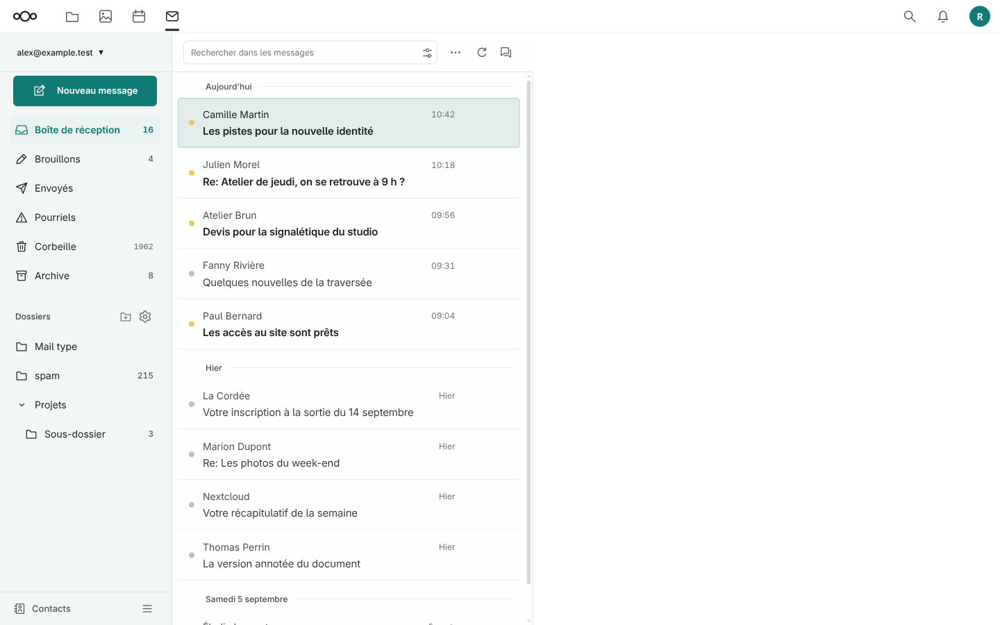
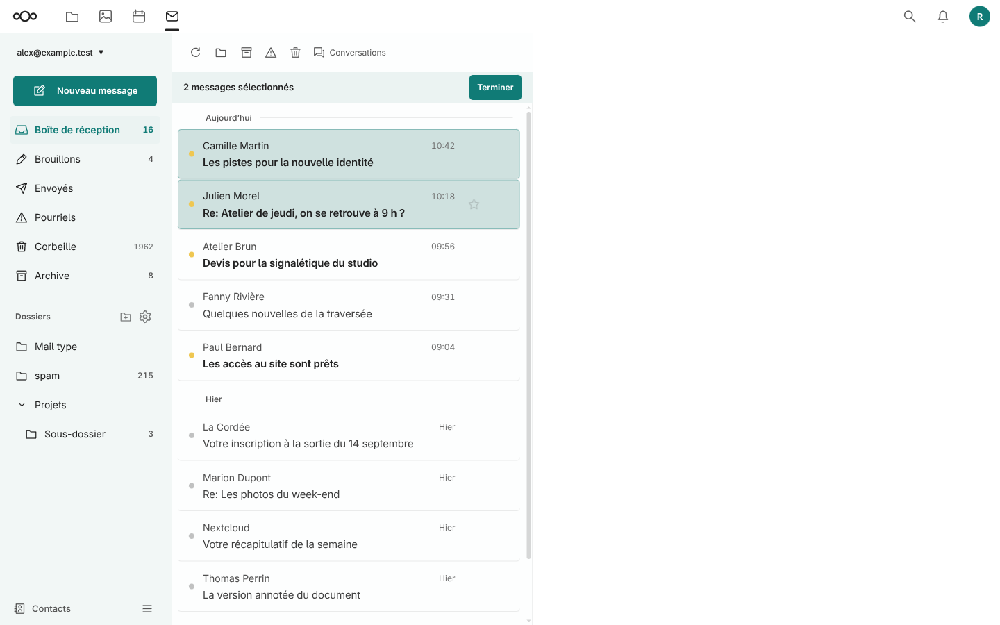
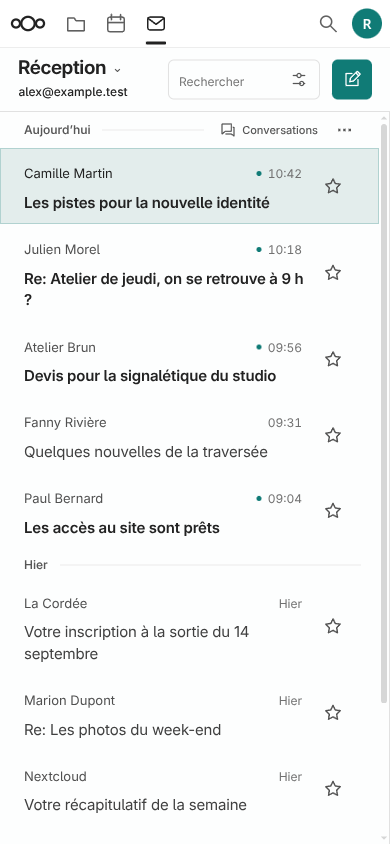
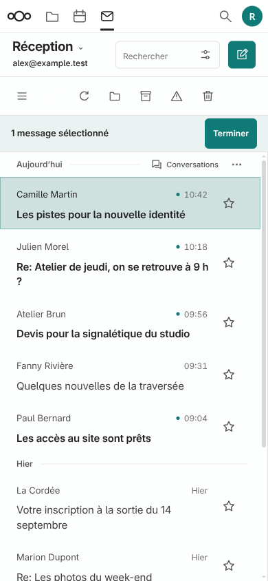

Un Ctrl+clic (ou Cmd+clic) sur ordinateur, ou un appui long sur mobile, démarre la sélection. Les clics et touchers suivants ajoutent ou retirent des messages. Le bandeau permet de terminer la sélection ; les actions groupées restent celles de SnappyMail.



